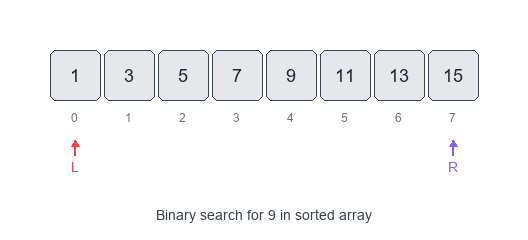
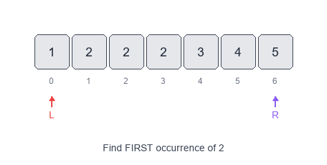
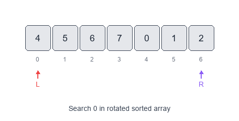

Introduction to Modified Binary Search Pattern
Classic binary search assumes a sorted array and a simple "go left / go right" decision.
Visual Examples
Classic Binary Search

Find First Occurrence

Search in Rotated Array

The Modified Binary Search pattern keeps the same $O(\log n)$ search idea, but adapts it to handle more complex structure:- rotated sorted arrays
- bitonic (increasing then decreasing) arrays
- duplicate values
- finding boundaries (first/last position)
- “next greater / ceiling / minimum difference” style queries
When to use
- The input is sorted or almost sorted (rotated, bitonic, with duplicates).
- You need first/last occurrence, lower/upper bound, or a range.
- The problem has a monotonic property where one side is always “valid” and the other “invalid”.
Common variants
- Order-agnostic binary search: works on ascending or descending arrays.
- Lower bound / upper bound:
- first index with
arr[i] >= x - first index with
arr[i] > x
- first index with
- Find first/last occurrence: derive from lower/upper bound.
- Rotated array search: one half is always sorted; decide which half contains the target.
- Rotation count / minimum element: find the pivot.
- Bitonic array:
- find peak index
- binary search in the increasing part, then the decreasing part
- “Infinite array” search: expand window exponentially, then binary search.
Pattern recipe
1) Identify the monotonic decision
- For each
mid, decide which side must contain the answer.
2) Use correct bounds template
- For exact match: classic
while left <= right. - For boundary search (first/last): prefer
while left < rightand converge to an index.
3) Watch the off-by-one rules
- Boundary problems are typically won or lost by invariants.
- Example invariant for lower bound: answer is always in
[left, right].
- Example invariant for lower bound: answer is always in
Complexity
- Time: $O(\log n)$ for most variants.
- Space: $O(1)$.
Short examples
Order-agnostic binary search — Python
def order_agnostic_bs(arr, target):
if not arr:
return -1
left, right = 0, len(arr) - 1
is_asc = arr[left] <= arr[right]
while left <= right:
mid = (left + right) // 2
if arr[mid] == target:
return mid
if is_asc:
if target < arr[mid]:
right = mid - 1
else:
left = mid + 1
else:
if target > arr[mid]:
right = mid - 1
else:
left = mid + 1
return -1
Lower bound (first index with arr[i] >= x) — Python
def lower_bound(arr, x):
left, right = 0, len(arr) # right is exclusive
while left < right:
mid = (left + right) // 2
if arr[mid] < x:
left = mid + 1
else:
right = mid
return left # may be len(arr)
Find range (first and last occurrence) — Python
def search_range(arr, target):
left = lower_bound(arr, target)
if left == len(arr) or arr[left] != target:
return [-1, -1]
right = lower_bound(arr, target + 1) - 1
return [left, right]
Rotated array search (distinct values) — Python
def search_rotated(arr, target):
left, right = 0, len(arr) - 1
while left <= right:
mid = (left + right) // 2
if arr[mid] == target:
return mid
# left half is sorted
if arr[left] <= arr[mid]:
if arr[left] <= target < arr[mid]:
right = mid - 1
else:
left = mid + 1
# right half is sorted
else:
if arr[mid] < target <= arr[right]:
left = mid + 1
else:
right = mid - 1
return -1
Problems to practice